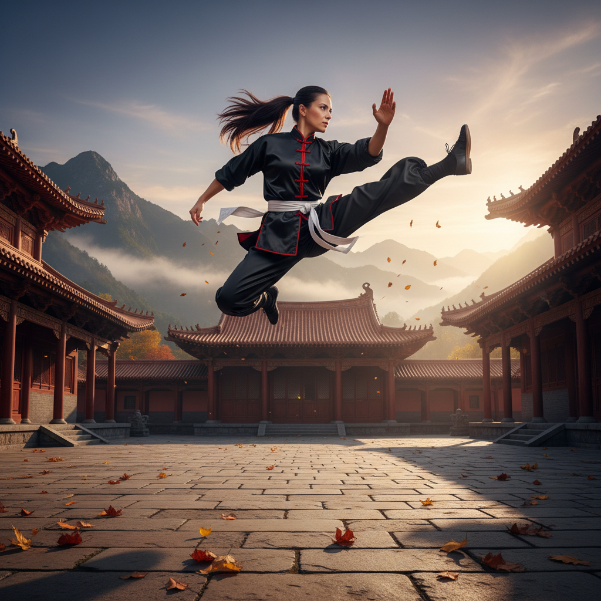
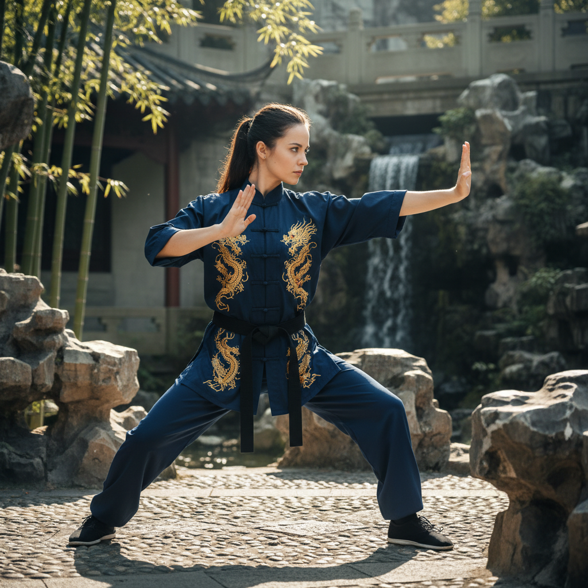
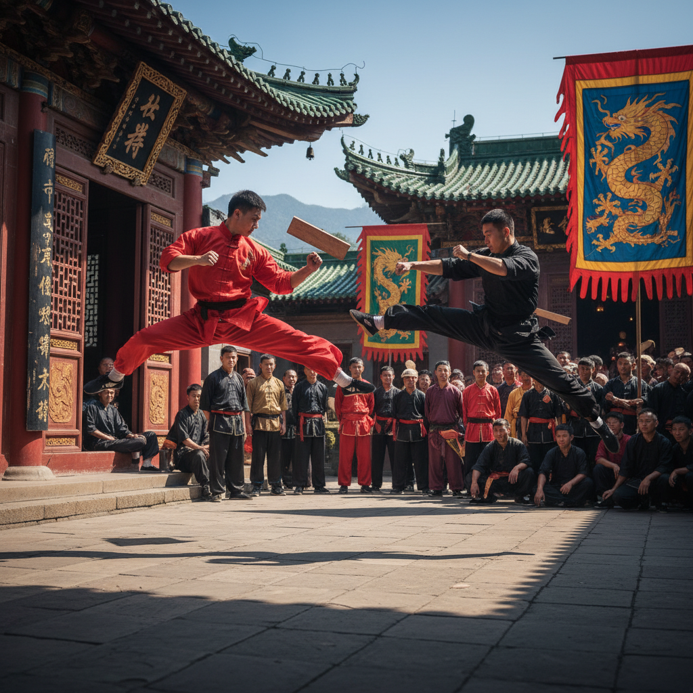
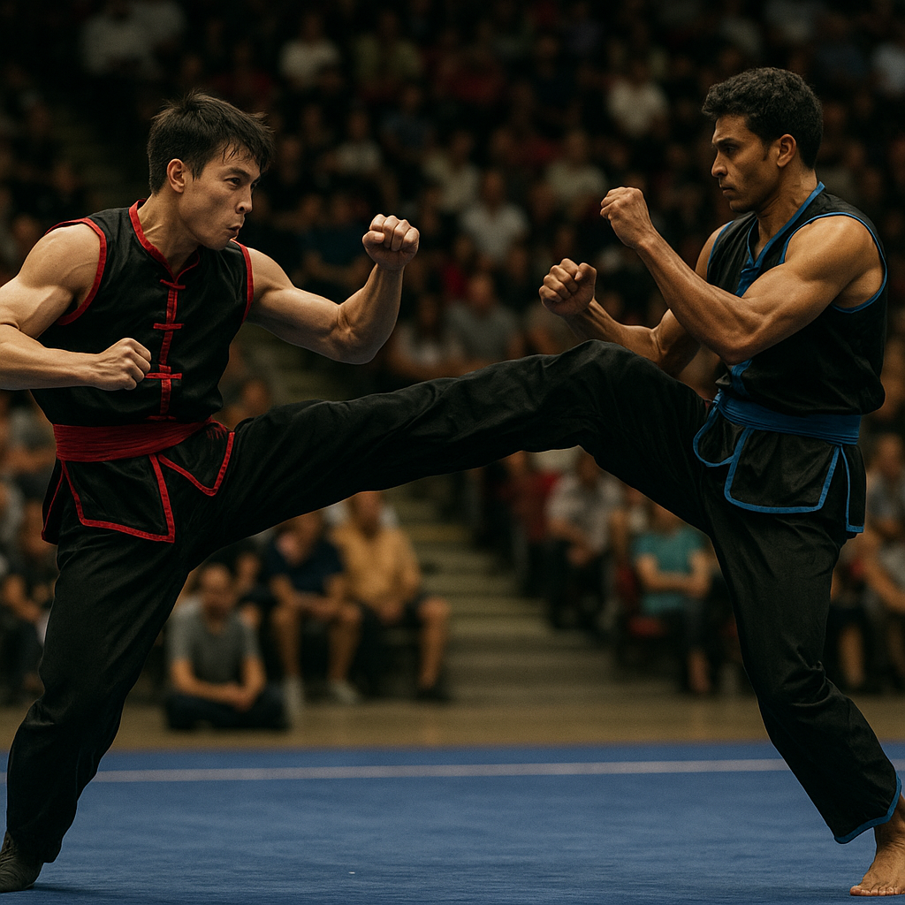

O Kung Fu Taishan é mais do que uma prática de luta — é uma jornada de autoconhecimento, disciplina e equilíbrio. Inspirado nas tradições milenares da China, ele carrega consigo a essência de uma arte que atravessou séculos, moldando não apenas guerreiros, mas também pessoas mais fortes por dentro.
De forma lúdica, podemos imaginar o Kung Fu como a dança de um tigre e a leveza de uma garça. Em alguns momentos, os movimentos são firmes, potentes e cheios de energia; em outros, suaves, fluidos e precisos. Cada golpe, cada postura, conta uma história — como se o corpo estivesse conversando com o tempo e com a natureza.
No estilo Taishan, o praticante aprende que a verdadeira força não está apenas nos músculos, mas na mente tranquila e no coração equilibrado. Assim como uma montanha (que inspira o nome “Taishan”), o aluno é incentivado a ser firme diante das dificuldades, resistente às tempestades e constante em sua evolução.
Treinar Kung Fu é como plantar uma semente: no começo, exige paciência, dedicação e cuidado. Com o tempo, essa semente cresce, floresce e se transforma em confiança, foco e respeito — por si mesmo e pelos outros.
Fundada em 1979 em Osasco/SP por Aparecido Lopes de Jesus (Mestre Lopes).
Filiada à Federação Paulista de Kung-Fu/Wushu e reconhecida pela Confederação Brasileira de Kung-Fu/Wushu (CBKW).
Os treinos abrangem diversas faixas etárias.
Eles também realizam competições internas.